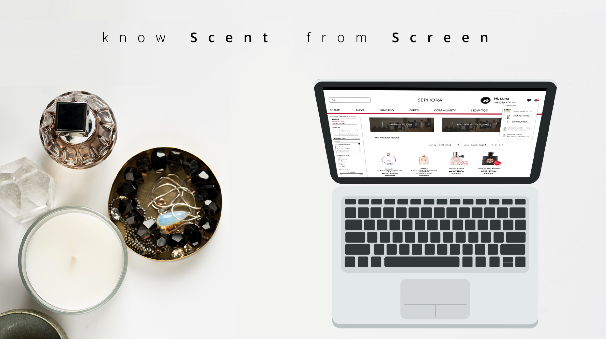
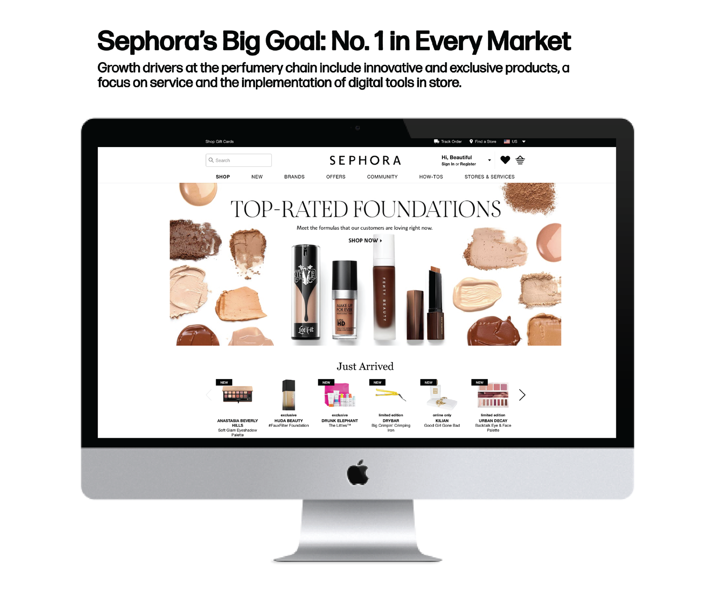
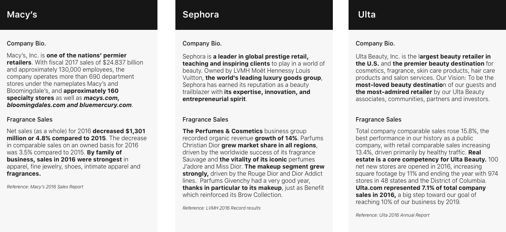
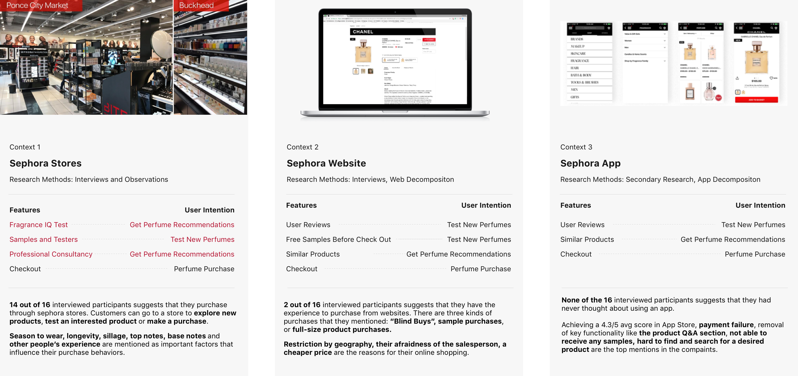
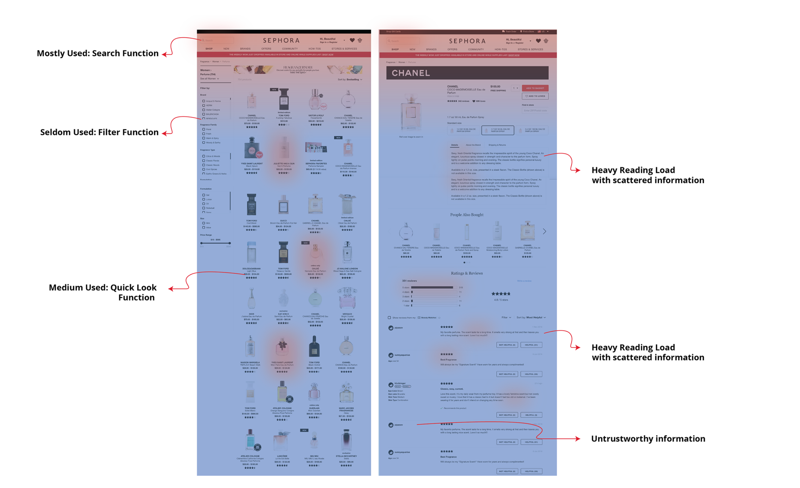
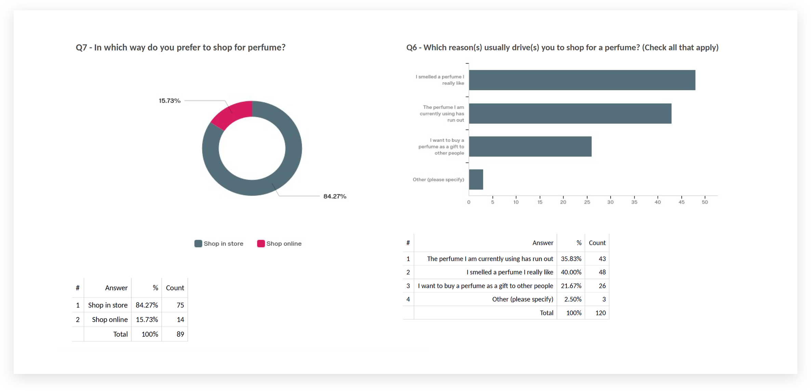
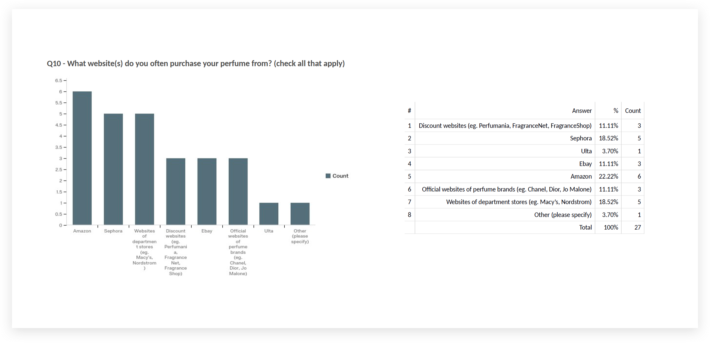
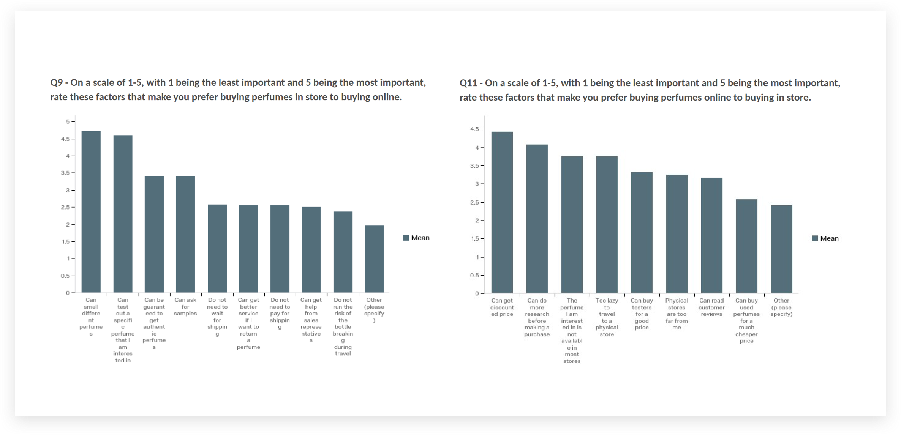

Amortentia
This projects aims at researching factors that influences perfume sales of Sephora, a typical retailer of personal care and beauty stores with online services. Utilizing a combination of multiple research methods, the outcome of this project will help to improve Sephora's online perfume sales.

THE CHALLENGE
Perfume Online Sales is Way Less than Its' Instore Sales
While Sephora is striving to be No.1 in every beauty market, fragrance business is a less-mentioned by customers than its makeup business. Based on our survey, 84.27% of Sephora's customers prefer to purchase perfume from stores than sephora.com. We aim to improve Sephora' perfume online sales through research, design and validation.

MARKET RESEARCH
Competitor Analysis
In USA, Sephora is considered a high-end cosmetic store in the US market. Many digital marketing stretegies and design make them standout among its competitors in their recognized friendly instore environment, their professional product consultants and beauty eductions. Among these high-end perfume stores, customers' perfume shopping alternatives includes similar beauty stores like Ulta, and omnichannel retailers like Macy's.

CONTEXT RESEARCH
Instore Perfume Business Attracts 14/16 Customers
Store, website and app are the three main channel to access to the customers. We assume that users experienced different pain points due to the different contexts. To research this, an naturalistic observation in stores were carried out to discover customers' interactions with the assistants and the displays; Interviews were carried to understand user intentions and frustrations; Web and App decompositons were utilized to understand important features provided.

USER RESEARCH
Online Perfume Purchase: Restock Rather Than Explore New Products
With low user acceptance rate for online perfume purchase, 7 contextual inquiries are carried out. The participants were asked to use the website to make a perfume purchase, we then mapped their behaviors onto the web interface maps. The color represent the frequency of users' interaction towards each features. We discovered that users used search box the most since they always utilized the website to restock their purchase. They find it rather hard to read through the long and abstrack text description where they cannot know the scents.

Validation and Prioritize
To validate our qualitative research results, a survey was carried out to reach a larger audience than what is available through observations or interviews. The structured and standardized questions will help to avoid potential biases and has greater statistical significance, enabling us to consider generalization.
Take the Survey HereFinding 1: 84.27% of perfume purchaser prefer instore shopping, compared to online shopping.
Q9 questions helps us understand the segment of online users and offline users. It also helps us understand the potential market size of online shopping. Q6 reveals that explore new fragrance and restock are the top two purchase intentions. This helps us better understand our users' goal and prioritize our following personas.

Finding 2: Sephora.com's Top 1 online competitor is Amazon.
This questions helps designers and researchers realized our own biases where we completely neglected the tech giant, the largest Internet retailer Amazon. We assumed that amazon wins in its shipping and returning policy as well as its variety of perfumes spanning from cheap to luxury.

Finding 3: While customers value instore shopping by the ability to smell different perfumes, online shopping still have its privilege in discounts, ability to research and relative larger variety than instore perfume purchase.
We designed this two questions according to the results from semi-structured interviews, the comparison makes it more clear of online perfume shopping's strength and weakness. It also validate our prior research that users prefer instore purchase in that customers could test the scent of a perfume.
